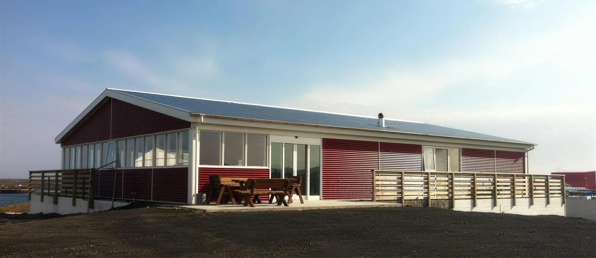
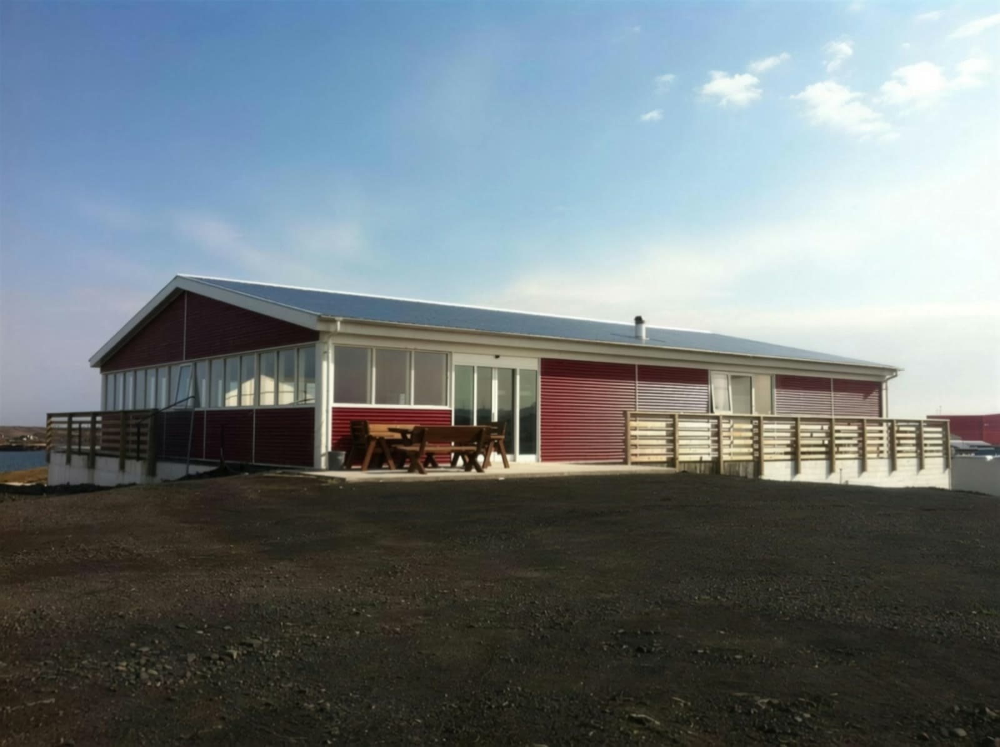
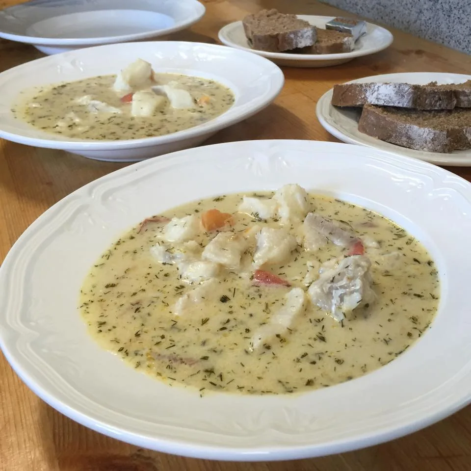
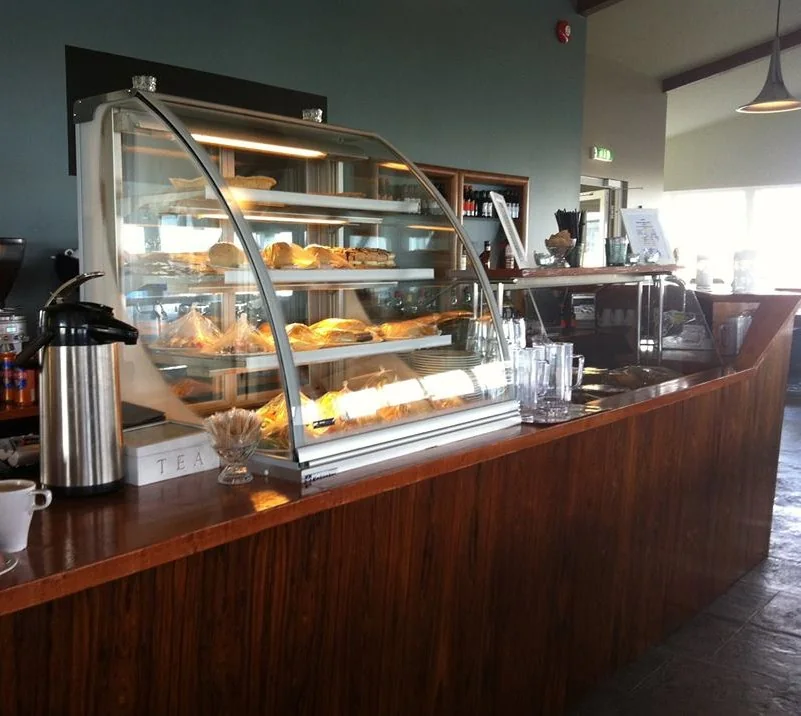
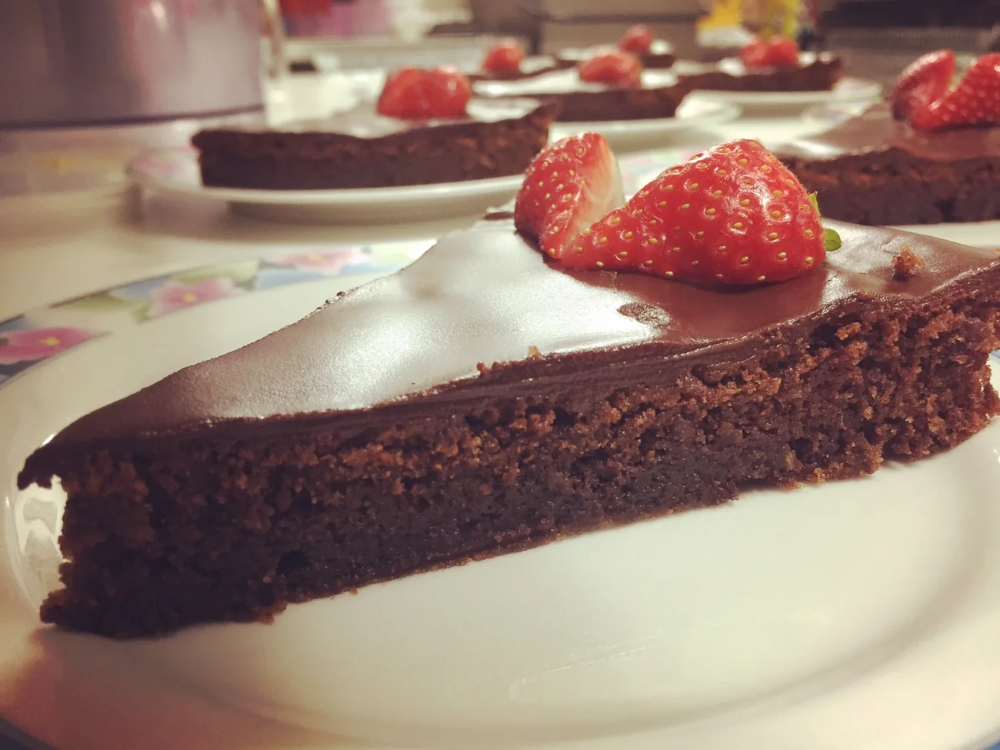
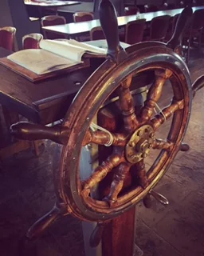
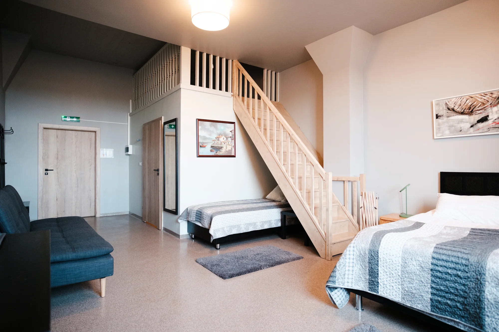

Restaurant by the harbour
Brúin, seafood restaurant by the harbour in Grindavík
Fish off the boats in the harbour, seating for 135 and a view over the ocean.
Book a tableThe lights are on
Brúin opened on Hafnargata in June 2013. In November 2023 Grindavík was evacuated. In June 2025 the house opened again.
It is open. Coffee on the pot, and a table by the window that faces the harbour.

Beneath the house there is a hill
They own a boat and fish from the same harbour
Miðaftanhóll
They fish from the same harbour we do
Beneath the restaurant is a hill named Miðaftanhóll, the Hill of Midevening. It is the home of a hidden couple and some other elves. The couple look after the area around the hill and assist other creatures when needed.
They own a boat and fish from the harbour.
To see the elves you need only three things: a bit of joy in your heart, permission from the adult in you to let the child in you go out and play, and an elf who wants to be seen.
From the card that hangs in the dining room.

The Captain's fish soup
The soup people come back for
The chef makes it himself and it is on the menu every day we are open. Rye bread with it.
2.900 kr.
Book a table
The house
A low red-clad house at the front of the harbour, with a terrace and a glass corner facing the sea. The room seats 135, there is a play corner inside and a groups menu for larger parties.
The house opened in 2013 and stands on Hafnargata, a stone's throw from the pier.


Find us
Hafnargata 26, 240 Grindavík. At the front of the harbour, minutes from the Blue Lagoon.
Opening hours can change. Call 426 7080 to be sure.
240 Grindavík 426 7080 bruin@simnet.is
Book a table
Send us an enquiry and we confirm by phone or email. No payment is taken here.

Same family
Hótel Grindavík
A place to stay within walking distance, eight kilometres from the Blue Lagoon. Double rooms and family rooms with a sleeping loft.
Book direct with us.
See the hotel